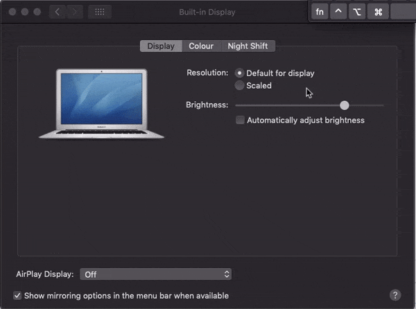
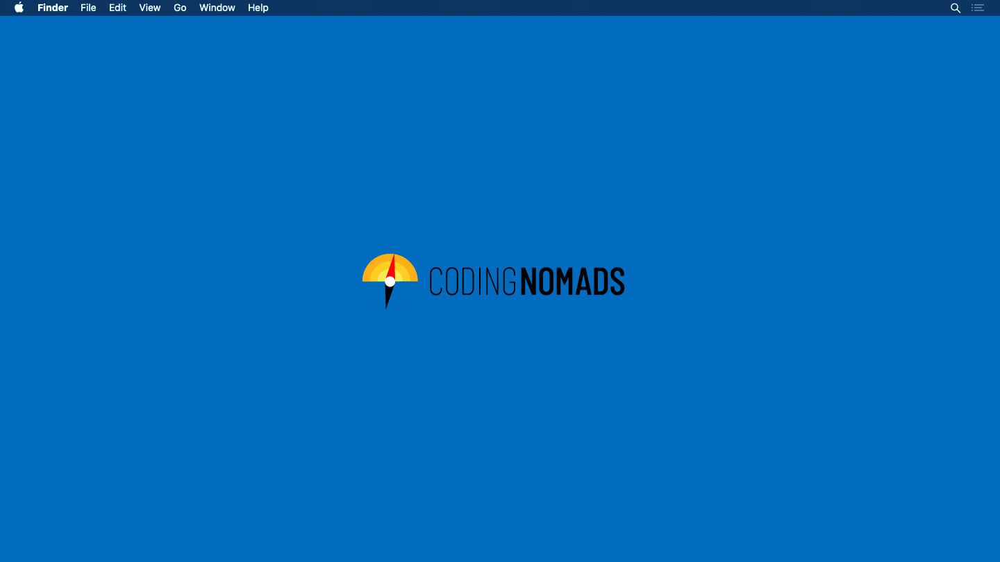
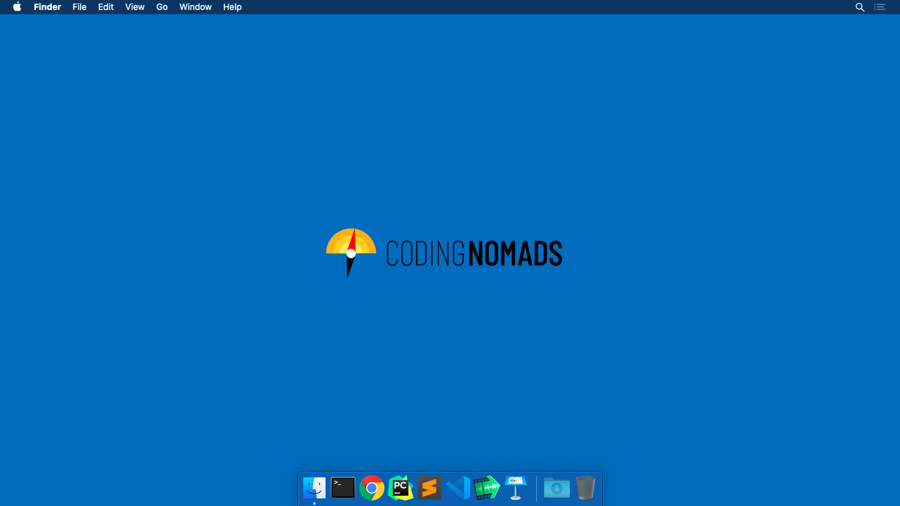
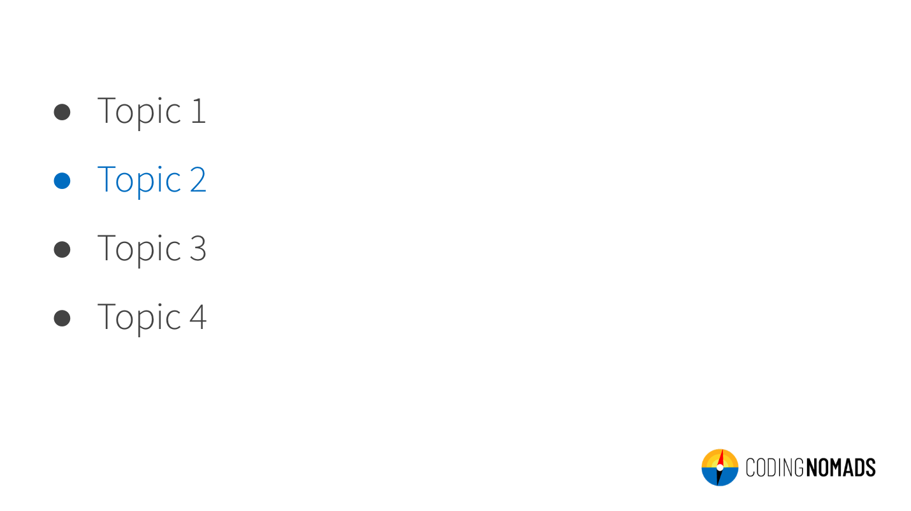
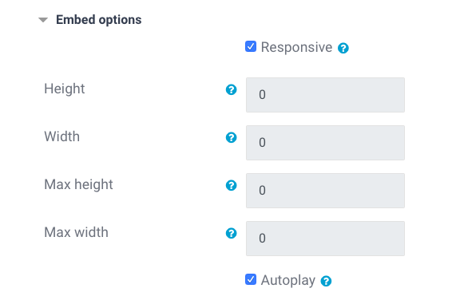
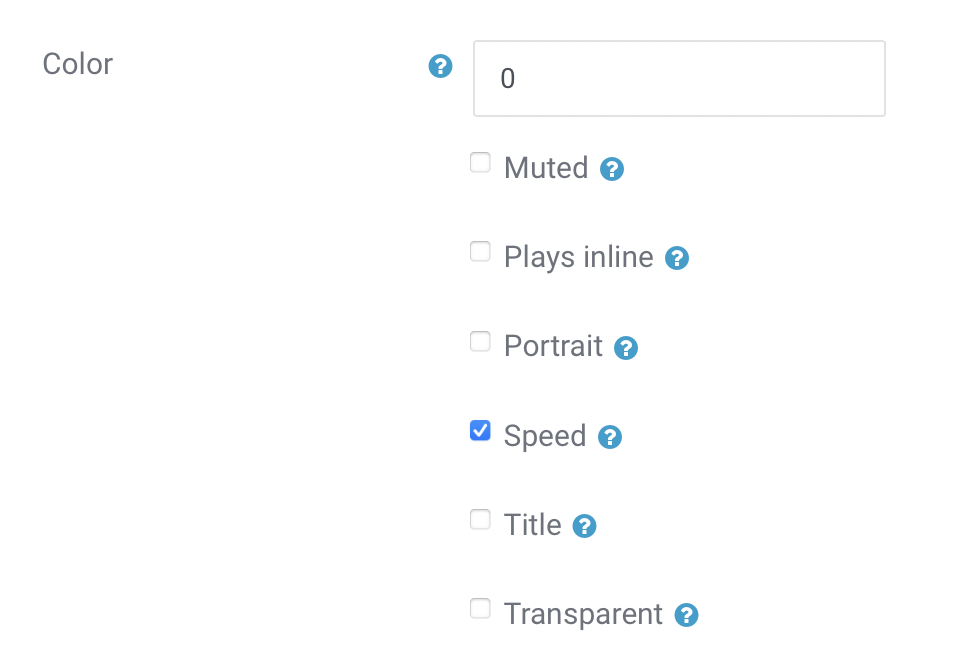

Creating Videos¶
This document will guide you in how to create video lessons for your course. Let's start with a tl;dr (but do read over it):
- Hardware: A good mic is extremely important, also use a pop filter and a mic arm
- Software: If possible, use screen recording software
- Screen Resolution: 16:9
- Video Length: 3-5 minutes is best, definitely stay below 10 minutes
- Tone: Your friendly neighborhood coder
Didactic Structure¶
Same as with your written content: follow the 3-step-teaching principle:
- Intro: Tell your students what information you will give them
- Main: Give them that info
- Recap: Tell them what information they just got
Screencast Recording Tips¶
- Recording Screencasts - Hardware, Software, Dos and Don'ts (by Wes Bos)
- Code School Screencasting Framework
- How To Record a Programming Screencast (by Scott Lilly)
- How To Create Screencasts That Don’t Suck (by Shawn Hesketh)
Examples Of Coding Screencasts¶
- Beginner's Guide to JavaScript (by Guil Hernandez)
- Highly legible coding examples even at small screen sizes, editor is full screen.
- What's the meaning of underscores (_ & __) in Python variable names? (by Dan Bader)
- Python Tutorial for Absolute Beginners #1 - What Are Variables? (by YK Suaishita)
- Python Tutorial for Beginners 8: Functions (by Corey Shafer)
- Note: Font size could be increased
- Heres how JavaScript "Named Params" Destructuring Works (by Wes Bos)
- Note: Stopping to show your face after the intro gives more space for your code
- Heres how React's New Context API Works (by Wes Bos)
- Note: Removing editor menu bars etc. avoids clutter and dating of the video
- Free Courses at Vuemastery.com
Hardware¶
Great audio quality is extremely important for quality screencasts. Having a good microphone makes up for most of that, but there are also a couple of other things to consider. Read about how to improve your hardware setup for audio recording in this section.
Microphone¶
If you are serious about creating quality screencasts, a good microphone is essential. Please contact us if you are building a course but you don't have a quality microphone equipment, since we may be able to support you in purchasing one.
Recommendation: "Audio Technica ATR 2100 USB" (or "Samson Q2U" in Europe). This is a low-price but high-quality microphone that operates over USB. It is small and simple to handle, yet dramatically increases the audio quality as compared to your built-in computer mic.
Microphone Adjustments¶
- Distance: Aim for 2-20cm (1-8 inches) between your mouth and the microphone.
- Direction: Aim to speak directly into the mic, not off to the side.
- Gain: Turn up your gain, but avoid it going too high.
Additional Equipment¶
Mic Arm: Sinc you will want to have your computer in front of you for coding, a mic arm can help to place the mic where you need it for a good recording outcome.
Pop-Filter: Plosives, such as "p", "t", "k", can come out surprisingly loud and disturbing in a spoken audio recording. A pop filter can help to reduce these pop sounds.
Headphones: In case that you like to hear your voice during the recording, a pair of headphones will be necessary. Use in-ear headphones to avoid any sound they produce from leaking into your recording.
Audio Foam: Using audio foam can reduce room echo. If you have a small room with fabric, such as a walk-in closet, that can also work as an uncomplicated alternative.
T-Shirt: No, this is not about getting dressed! Putting a T-Shirt under your laptop while recording can significantly reduce the clicking noise that your computer keys make.
Software¶
Most of your videos will be screen recordings. The important part to remember is that we want you to record both your video as well as audio in the highest resolution that makes sense. Large files are not a problem, and having a high video and audio quality allows for more precise editing (e.g. code zooms when necessary) without compromising the viewing experience. Below is a list of software solutions that help you with recording your screen while retaining video quality as well as your personal sanity:
- QuickTime Player (MacOS): Comes with the OS and is a simple way to get started. Price: Free
- iShowUInstant (MacOS): Allows to record specific windows and even set the size of a recording screen. Easy to start/pause/stop recordings. Low-cost option that makes already improves your screen recording experience. (I, Martin, use this one. Happy to answer questions about it) Price: $24
- OBS Studio (MacOs, Windows, Linux): Free and Open-Source software for video recording and live streaming. Check out these tutorials for Windows or for Linux Price: Free
- Screen Flow (MacOs): Professional screen recording software with a higher price tag and more features. Price: $129
- Camtasia (MacOS, Windows): The biggest and baddest (but in a good way). Includes a full-featured and easy-to-use editing studio as well. Haven't used it myself, but heard good things about it. Probably overkill, though, unless you're really into that. Price: €269.05
Additional Software¶
-
KeyCastr (MacOs): you can show key presses on screen, which helps viewers if you're using any keyboard shortcuts. The program allows you to display all key presses or only command keys, and is easy to toggle on and off.
-
Mousepose (MacOs): allows to highlight your cursor to better show clicks and cursor movements on your recording. Alternatively, you can increase your cursor size through your operating system’s accessibility settings.
Recording¶
In this section, you'll find tips that can help you during recording to create the best possible video lessons for your students.
Video Length¶
3-5 minutes: Keeping your videos short helps both you and your students to stay on track. Aim for 3-5 minutes per video, and definitely stay below 10 minutes. If you are explaining a complex concept that requires more time, split it up in logical chunks that are each below 10 minutes. Keeping our students engaged is paramount, so we want to give them the sense of achievement and completion when finishing a section as often as possible. Our brains are also much better at processing small chunks of information, and it's easier for students to go back and revisit a topic if the videos are on-point, clear, and easy to digest.
Shorter videos: You can also create shorter videos, e.g. to introduce a section in the course. Such videos can be only 1 minute long, yet help students to prepare for an upcoming new topic.
Screen Resolution And Framerate¶
Always record in a 16:9 ratio with a framerate of 60 FPS. Don't go below 30 FPS since cursor movements start looking jumpy and are then difficult to follow. To assure the right screen ratio, either set your screen resolution to 16:9 and record fullscreen, or create a defined 16:9 area on your screen and record only that section. Screen recording software can greatly help with both aspects.
Fullscreen-Recording: Your screen needs to be set to a 16:9 resolution (e.g. 720p HiDPI (= 1440p real resolution), 1080p or 720p). If your computer doesn't support a 16:9 screen resolution, there are a few hacks you can attempt:
- External Monitor: If you have access to an external monitor with the right aspect ratio, this can be a great way to go. It also allows you to use your laptop for notes etc. while recording.
- Hidden Display Options: On some MacBook models and MacOS versions, you can access additional resolutions with a small "trick". In your display preferences, hold "option" when clicking on "Scaled" to see previously hidden resolutions:

- SwitchResX: In case the above doesn't work for you, SwitchResX is a tool that allows setting user-defined screen resolutions on MacOS. Price: $14
Clarity And Focus¶
Use a clean and focused design for your desktop, dock, status bar, etc. to:
- avoid dating your assets (remove clocks, assets that may change in future OS versions etc.)
- avoid distractions to increase students' focus
On MacOS, you can remove a lot of the items in your status bar via the System Preferences. A reduced version can look like below:

Remove unused items from your doc and keep it focused on dev tools that you are using, e.g.:

Additional Tips¶
- Increase all font sizes: in your IDE, your browser, and your terminal. Make it big, bigger than you'd think. It's always better to focus on small parts of code and make it easy to read and understand.
- Increase your cursor size: This makes it easier to orient for your students. In MacOS you can increase the cursor size in Accessibility Settings.
General Info¶
This section holds some general answers to questions related to video production.
Which Sections Should Have a Video?¶
Every Section should have at least one video. Screencasts offer students a different way to approach the material. They get exposure to a topic that is new for them, and the proof that, and how, it can be done. This makes a big difference in preparing the mind to accept new information.
I like it if every new concept that's introduced is shown at least once by the instructor. (Student Quote)
Video Screencasts are our online way of walking students through a concept and giving them the high-level understanding and confidence that it can be done.
Course Intro & Goodbye Video¶
Every course should have an intro video as well as a goodbye video. Make your students feel welcome and cared for. Introduce yourself as well as your course in the introduction video, and congratulate your students and point them to next steps in your goodbye video. Feel free to record yourself speaking. If you do so, remember to keep your background neutral. These videos can be very short (~1 min).
Section Intro Videos¶
Optionally you can create short section introduction videos (~1 min) that audio-visually explain what topics will be addressed in the upcoming course part. For these videos, you can use Google Sheets or PowerPoint to create simple and minimal slides that address the main points the section will be talking about.
Screencasts, Slides, Or Face Recording?¶
Most videos should be screencasts. You want to show your students how you code and solve challenges, and get them familiar and comfortable looking at a screen with code. Screencasts with voice narration are therefore the main type of videos you should create for your course.
That said, you can always loosen it up and increase retention and enjoyment for your students. You can use slides to introduce new topics and to create recaps at the end of a section. In the intro and goodbye videos, and also sometimes in between, if you feel comfortable with that, you can record yourself talking directly to your students, giving them encouragement.
Slides¶
When using slides for any of your videos please use our slides template. Make a copy of the template and create your slides from it. We suggest doing this in order to keep the style consistent across multiple courses.

Stick with this basic design. It'll help your students to focus on the essential information.
Note: If you are using KeyNote on MacOS, you can download a corresponding Keynote theme here. Please install the suggested fonts locally:
Slide Fonts¶
Barlow condensed(titles)Source Sans Pro(text)Roboto Mono(code)
You can download them all from here.
Video Creation Tips¶
Below are a selection of tips and tricks to keep in mind to amp up your video creation game and assure high-quality, educational screencasts.
Tips For Better Quality Screencasts¶
The quality of screencasts can be positively and negatively affected by some aspects that might not be obvious at first. They still have a big impact in how professional your screencast will appear.
Stable Table¶
Use A Stable Table. Especially if you use your computer camera to record yourself talking, it is necessary that the setup is stable and doesn't wobble around.
Zen Screen¶
To help students focus and make you look more professional, avoid any screen clutter, such as:
- Distracting wallpapers
- A cluttered Desktop
- Too many apps in your Dock
- Notifications showing up during recording (set the mode to Do not disturb)
- Etc.
Cultivating a zen screen for your video recordings also makes inconsistencies between different videos less likely.
Timeless Videos¶
Avoid showing aspects of your OS that are highly dateable. That includes e.g.:
- MacOS Dock
- Windows Start Menu
- Buttons on top of windows
- Clock with date and time
The easiest way to avoid showing dateable items, is to use the full-screen mode of your text editor. If you need to show your desktop, remove your clock.
Relaxed Code¶
Give your viewers some time to see the code you just typed. Pausing for a moment helps students to absorb, type, or pause the video in the right spot without getting stressed. It helps students if they can see the code for a few seconds before you move on.
Content-Focus¶
Minimize intro times and start talking about your content right away. Students are here to learn effectively. Occasionally, jokes and break-out moments are encouraged and help to lighten the load, but make sure that overall your videos are effective and content-focused.
Large Fonts¶
Use a large font in your editor. Bump up the font size more than you think you should. Usually, you'll focus only on a small section of code at a time. Showing that specific section in a large font is preferable to having a cluttered screen with lots of code in a small font.
Students should be able to view your video on a smartphone and still be able to read the code you're writing.
Crisp Text¶
Avoid blurry text. This ties in with using a high resolution that allows you to zoom into specific sections of your code when editing the video.
High-Contrast Color Schemes¶
We want our videos to be as accessible as possible. Use high-contrast color schemes in your editor to make sure the code is as legible as possible.
Avoid "Smart Quotes"¶
Don't use unicode smart quotes on your slides, as they cause syntax errors when used in a program. Instead make sure that you use plain quotes in your code examples on slide decks.
Keep Your Errors¶
A tutorial teaches two things:
- the topic of the tutorial
- how to approach solving problems
If it isn't too distracting, keep your mistakes and syntax errors and use them as an opportunity to teach your thought process while debugging. Your viewers will appreciate this as a learning opportunity.
Recap Your Videos¶
Remember the three-step teaching process and make sure that you intro and recap the topics of your screencasts.
Avoid Swearing¶
It's simple. Don't swear.
Tips That Allow Viewers To Follow-Along Easier¶
Orientation¶
Avoid switching tabs, windows, and applications too quickly. State clearly where you are and what you are doing. Context is very important to help absorb new information.
Point To Your Code¶
Help your viewers to keep track of what you are talking about by circling the code you want to point to with your cursor. You can enlarge the cursor in your OS's accessibility settings.
Avoid Shortcuts¶
Use your cursor and context menus. Keyboard shortcuts are confusing because students can't see what has been clicked. If you must use keyboard shortcuts, limit it to common ones and use software to display the shortcut on screen. Preferably you do everything on screen so that your viewers can follow along.
Scroll For Navigation¶
Show your scrolling when navigating within a file. Avoid jumping around or editing out when you scroll. This, again, makes it easier for viewers follow along and stay on track with your explanations.
Avoid Background Noise¶
Find a quiet spot for your recording. Audio quality is paramount for screen recordings. Avoid construction noises from outside, pets, ceiling fans, creaky floors and chairs, as well as human-made distracting noises, such as coughing, mouth noises, etc.
Avoid Filler Words¶
Attempt to cut down on using filler words, such as ahem, uhm, like, so, you know, etc. Some can be edited-out, but if you use them frequently, it is a ginormous effort to do so. Avoiding to use filler words makes you appear much more competent and makes your content easier to follow.
Avoid Visual Distractions¶
If you are recording yourself speaking, use a neutral background that isn't distracting for your viewers.
Record Small Chunks¶
Recording smaller chunks will keep your screencast quality high. When recording too much in one take, you might get tired and inattentive without noticing it.
Tutoring Instead Of Presenting¶
Imagine that you are speaking to only one person. Students should feel like they are in a mentor-student relationship, rather than sitting in a room full of people in an auditorium or at a conference.
Tips For Easier Editing¶
The following suggestions will reduce the time you need to spend on editing. Get into the habit of using these processes early on, your future self will be thankful.
Silence While Typing¶
If you are typing a longer section of code that doesn't need explanation on-the-go, avoid talking while typing. The silence makes it easy to edit out or speed up when editing.
Title Your Files¶
Use double-digit numbering in combination with the screencast topic's title for naming your video files, e.g.: 01_variables.mov.
Clarify Mistakes During Recording¶
When you realize that an explanation isn't working well or when you make a mistake you want to correct, first stop and mention that you'll redo this section. Then pause for a few seconds, undo what you did to get back to the start, pause again, and then start again. This helps to identify necessary edits and makes it easier to get good cuts. Instead of pausing, you can also use a distinct noise, such as snipping your fingers.
Add Editing Notes¶
Add a README file with notes for editing to your recorded screencasts. This document should mention:
- At what timestamp in which video are mistakes--to quicker find and cut them when editing
- When there should be a screen overlay (e.g. when accidentally mis-naming something while talking) and what should be on the screen overlay
Upload¶
Upload the finished recordings to your dedicated shared folder to allow us to give you feedback and add necessary edits.
Tips For Getting Comfortable Talking On A Screencast¶
Use the tips mentioned below to get more comfortable talking on a screencast. Like anything, it's a learned skill and you'll get more comfortable as you move along.
Research¶
Watch a couple of the videos that other course creators made. Most talk casually. Seeing that might help to give you a realistic idea of how you could do it. Diversify, look at different resources and find someone who you think has a good style. Chances are that you could work similarly. Watch their videos and learn from how they do it.
Script¶
Write out the topics you want to talk about for a video, keep notes around on paper or your phone and use them as anchor points when you talk.
Double-Take¶
Record the video and say what you want to say without worrying too much about it. Then throw away the audio and record only the audio a second time while you watch yourself do the thing you were doing. That way you already trained talking over it once, plus you only need to focus on one task at a time: first doing, then speaking.
Setting Up Video Time Instances¶
Generally, our team will handle uploading the videos to our platform. If you are setting up the Video Time Instances yourself, make sure that the Responsive option is checked in the Embed option of the resource:

You should also check Autoplay for your videos, and make sure that the Speed setting is checked:

This setting allows learners to change the video speed when watching your lessons.